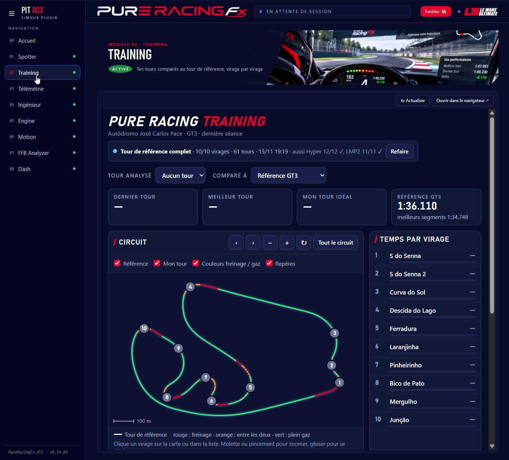
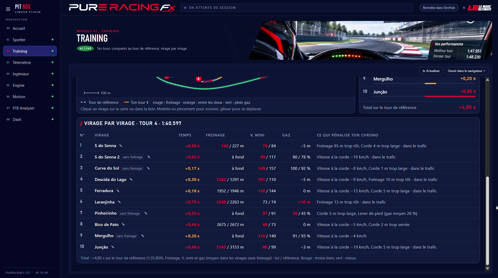

Training compare chacun de tes tours à un tour de référence de ta catégorie. Tu vois où tu perds du temps, virage par virage, et pourquoi : freinage, vitesse à la corde, trajectoire, remise des gaz. Et après chaque tour, ton ingénieur te le dit à la radio.
Dès que tu passes la ligne, la page se met à jour : ton tour, ton meilleur tour, ton tour idéal (tes meilleurs segments mis bout à bout) et le tour de référence.

Interlagos en GT3 : 4,80 s de retard sur la référence, dont 0,88 s dans le S de Senna.
Pour chaque virage, tes valeurs face à celles de la référence. Rouge : moins bien. Vert : mieux. Blanc : pareil.

Les virages portent leur vrai nom (S do Senna, Ferradura, Junção…) sur les circuits connus.
Avec le module Spotter actif, ton ingénieur te donne après chaque tour le virage où tu perds le plus, et une seule consigne : celle qui compte. Tu corriges au tour suivant, sans quitter la piste des yeux.
« Arrêt de bus, tu perds 5 dixièmes. 5 kilomètres heure de moins à la corde. »Spa-Francorchamps · GT3
« Pouhon, tu perds 8 dixièmes. Tu es trop large de 6 mètres à la corde. »Spa-Francorchamps · GT3
« Bruxelles, tu perds 7 dixièmes. Tu es trop large de 5 mètres à la corde. »Spa-Francorchamps · GT3
La référence n'est pas le tour d'un pilote : c'est le tour médian des voitures de l'IA du jeu, mesuré virage par virage. Elle est fournie avec Pit Box : tu installes, tu roules.
Les tours de référence des circuits de Le Mans Ultimate sont livrés avec le plugin, pour l'Hypercar, la LMP2 et la GT3.
Chaque référence vient de l'IA réglée à 100 % : un rythme solide, mesuré sur de nombreux tours, pas un tour d'extraterrestre.
Training reconnaît ta voiture et te compare à la référence de sa catégorie. Rien à choisir.
La référence de l'IA, ton meilleur tour, ton tour idéal, ton tour précédent ou n'importe lequel de tes tours.
Tes tours restent affichés après la séance, et même après un redémarrage de SimHub.
La page s'ouvre aussi sur une tablette ou un téléphone du même Wi-Fi : tu la regardes entre deux relais.
| Point | Ce qu'il faut savoir |
|---|---|
| Jeu | Le Mans Ultimate uniquement : Training lit la position et les commandes de toutes les voitures en direct. |
| Circuits | Tous les circuits de LMU. Les virages sont nommés sur Spa-Francorchamps et Interlagos, numérotés ailleurs (tu peux les renommer). |
| Radio | Les conseils après chaque tour passent par le module Spotter : active-le aussi. |
| Nouveaux circuits | Les références arrivent avec les mises à jour de Pit Box. |
Pour comprendre en détail ce qui se passe dans un virage, ouvre ta séance dans Télémétrie.